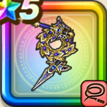

ぎんがの時空鞭
攻略班 9.0点 / 双竜打ちズッシード狭間からのおしおきホリゾンタルパワーバーティカルパワー
くわしい特徴
【レベル別習得スキル】 Lv1【ドラゴン】攻撃力+5 Lv1【ニンジャ】すばやさ+10 Lv10双竜打ち（消費MP：18）敵1体に威力150%の体技攻撃を2回し、たまに守備力を1段階下げる Lv20ズッシード（消費MP：15）重さを増やす呪文で仲間ひとりが受けるふきとばしの効果を無効化する Lv30狭間からのおしおき（消費MP：65）敵全体にブレス絶大ダメージを与え戦意喪失 Lv1を付与。敵の位置に応じた確率で右にふきとばし、残りの敵に巻き添えのダメージを与える Lv35ドラゴン系へのダメージ+5% Lv40ゾンビ系へのダメージ+5% Lv45攻撃力+12 Lv50ホリゾンタルパワー（消費MP：10）戦闘開始時に自身がパーティの端だと自身のすばやさとブレス攻撃の威力を上げ、それ以外の時自身のブレス攻撃の威力をかなり上げる Lv50バーティカルパワー（消費MP：0）戦闘開始時に最大HPの2%を消費し、消費量に応じてスキルダメージを上げる(効果4ターン) 【限界突破スキル】 1凸スキルの斬撃・体技・ブレスダメージ+7% 2凸スキルの斬撃・体技・ブレスダメージ+7% 3凸スキルの斬撃・体技・ブレスダメージ+7% 4凸スキルの斬撃・体技・ブレスダメージ+7%